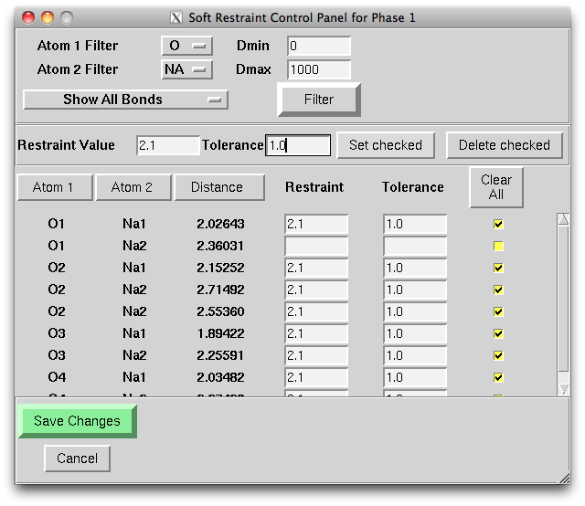
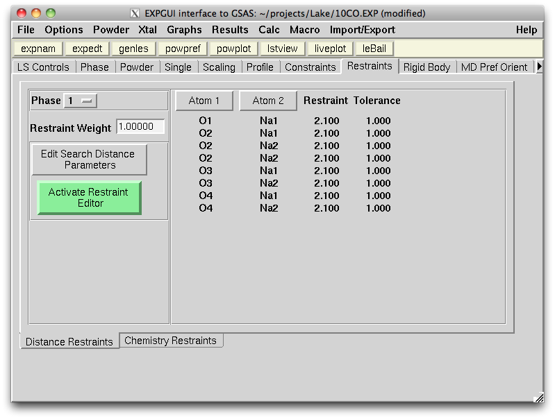
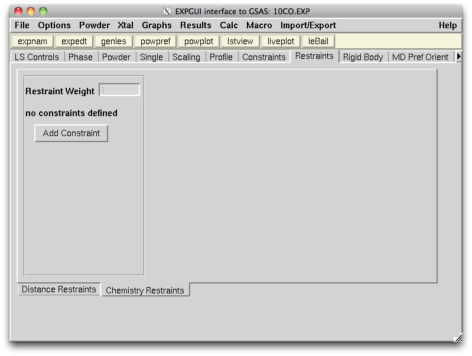
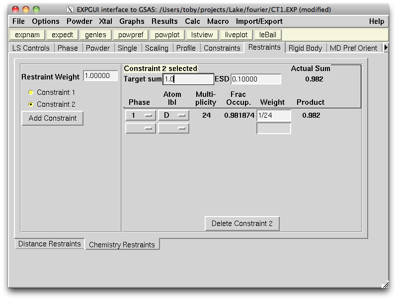
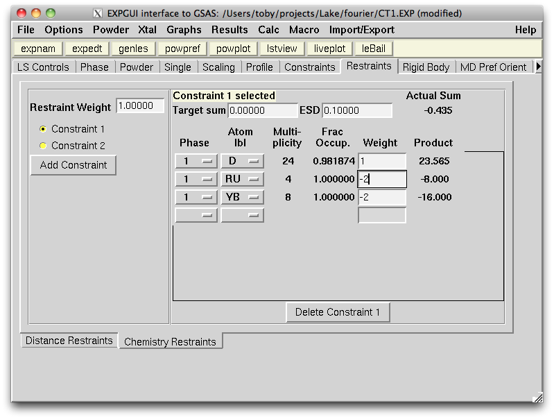

EXPGUI top Next page Previous page
EXPGUI, part 7
A.7 Restraints panel
GSAS offers two ways to limit changes to parameters that are based on expectations created by a crystallographer to create what is felt to be the most reasonable model. Restraints penalize the fit if aspects of a model (for example, bond lengths) differ from selected values. They are sometimes called "soft constraints", but they are not true constraints. They "push" the model towards the expectation(s) specified by the scientist, but do not require that expectation be maintained. Note that each expectation is weighted by the uncertainty (sometimes s.u. or E.S.D.) for the expectation as well as the overall Restraint Weighting factor. The smaller the uncertainty and the larger Restraint Weighting factor, the stronger the model is "pushed" towards following the expectation.
Restraints effectively add additional "observations" to the data that are fit in GSAS. Of course, these "observations" are conjectures made by the scientist and are not actually real data. These are distingished from constraints (sometimes called "hard constraints") which are listed on the Constraints panel). Constraints actually reduce the actual number of refined parameters in a model, by grouping parameters so that a single shift (possibly scaled) is applied to each parameter in the group.
The Restraints panel can be used to set up restraints on Interatomic Distances and on Atomic Composition. Note that the atomic composition constraints can be used to establish quite complex constraints that account for charge balance or even segregation of elements between phases. GSAS offers many other types of restraints, but EXPEDT must be used to access them.
A.7.1 Distance Restraints
.
When the distance restraints tab is first selected, the active distance restraints for the selected phase are shown. The Atom 1 and Atom 2 buttons can be used to sort this list.
The Restraint Weight parameter is very important. As this determines how strongly the distance restraints will be used in the refinement relative to the diffraction data. This value is sometimes set as high as 500,000 in the initial stages of a fit, but should be lowered as much as is possible in the final stages of the fit, as needed to obtain chemically plausible interatomic distances. For some refinements, a value of 0.0 is possible for the Restraint Weight in the final stages. This removes any restraint effect. To see how restraints are affecting the refinement, one can look at the ratio of the "Sum(w*d**2)" (shown in the .LST file) for the diffraction histograms vs. the restraint histogram.
The Active Restraints Editor can be used to select distances to be restrained or edit the restraints. If there are too many distances shown, the options at the top of the window can be used to select a distance range, or specific atoms to include. Likewise, only restrained or unrestrained distances can be selected. The changes are applied when the Filter button is pressed.
The bottom section of the window shows individual interatomic distances. A Restraint and Tolerance value is needed to restrain that distance.
.
The quantity minimized is
thus the "Tolerance" provides individual weighting for each restraint."Restraint Weight" * SUM{ [ (Distance - Restraint) / Tolerance ]**2 }To set a large number of restraints at the same time, select the check button next to the distance(s), or use the Check All. Then use the section above to enter a global Restraint and Tolerance value. These values are set when the Set Checked button is used. The Delete Checked button removes restraints from all selected distances.
The entered restraint information will be used onlt when the Save Changes button is pressed. The Cancel button will reverse any changes made while the window is open. Closing the window has the same effect as "Cancel."
Once distances are entered, they are shown on the main panel, as shown below.
Note that the interatomic distances that are shown are determined by the parameters to program DISAGL. These are controlled with the Edit Search Distance Parameters button.
A.7.2 Chemical (or Compositional) Restraints
.
Chemical constraints allow a model to be penalized if it moves away from expectations defined on the chemical compositions. Up to 9 constraints, of form
Target = W1 * O1 * M1 + W2 * O2 * M2 + W3 * O3 * M3 + ... can be defined, where Oi is the occupancy of atom i (often refined), Mi is the site multiplicity atom i (determined by the site symmetry) and Wi and Target are set by the scientist who defines the constraint. This allows chemical constraints to be used in many different ways. They can be used to "push" a model to have a particular composition on a site, or "push" an overall unit cell compositon or even encourage that the chemistry follow rules such a balanced charges with fixed atomic valency.When the panel is first loaded, it will be mostly blank, as shown below:
.
The "Add Constraint" button is used to enter one or more constraints, which are then defined by selecting the phase, and atom name for each atom in the constraint, as well as the weighting factor for each atom (Wi, above) as well as the Target value for the sum (W1 * O1 * M1 + W2 * O2 * M2 + W3 * O3 * M3 + ...) and the uncertainty (ESD) for the sum, as shown below:
.
A more complex example, which implements a charge balance constraint, is shown below.
Constraints are saved as the values are typed in. Also, the sum of the actual Wi * Oi * Mi values is shown in the upper right. Atom entries where the weight is blank or set to zero are ignored. New rows (up to 297) are added when the existing ones are all used. If an error is encountered in a constraint, a question mark ("?") is displayed for the Actual Sum and the constraint is not saved.
EXPGUI top Next page Previous page